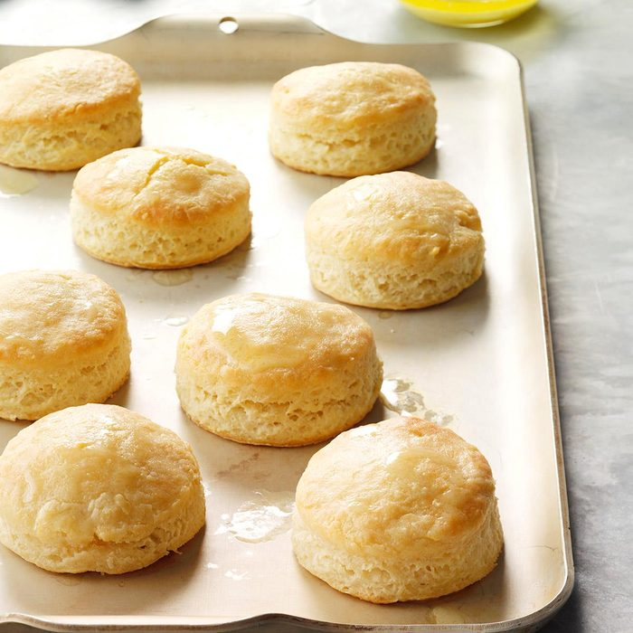

Inspired by: Popeyes Biscuits
The recipe for these four-ingredient biscuits has been handed down for many generations.
Ingredients
- 1/2 cup cold butter, cubed
- 2 cups self-rising flour
- 3/4 cup buttermilk
- Melted butter
Recipe instructions
- In a large bowl, cut butter into flour until mixture resembles coarse crumbs.
Stir in buttermilk just until moistened. Turn onto a lightly floured surface; knead 3-4 times.
Pat or lightly roll to 3/4-in. thickness. Cut with a floured 2-1/2-in. biscuit cutter.
- Place on a greased baking sheet. Bake at 425° until golden brown, 11-13 minutes.
Brush tops with butter. Serve warm.
Return to top
Return to main page